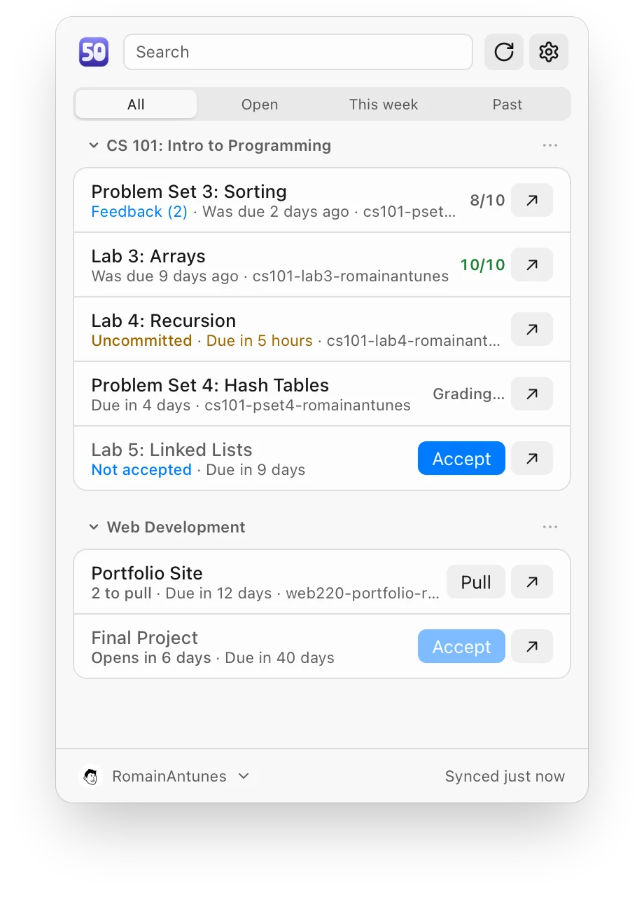
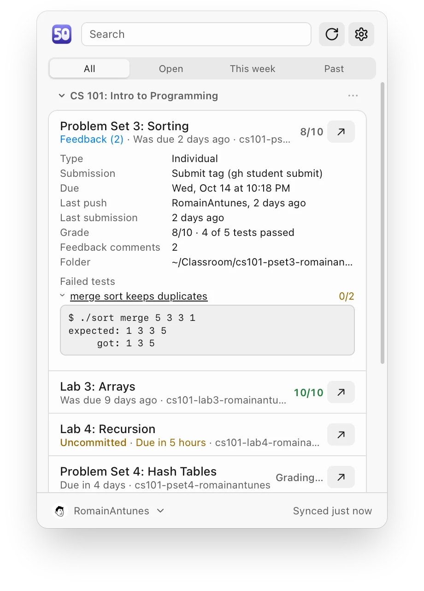
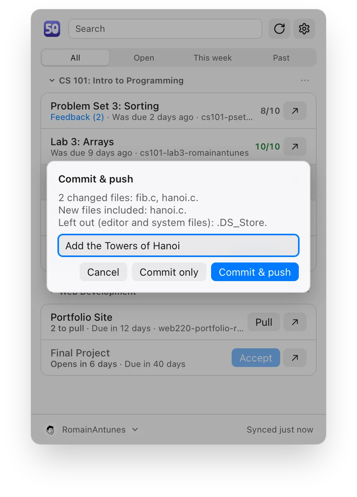
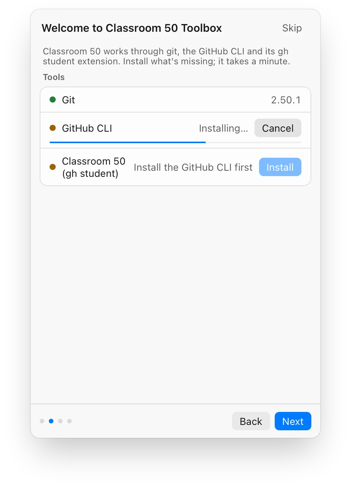
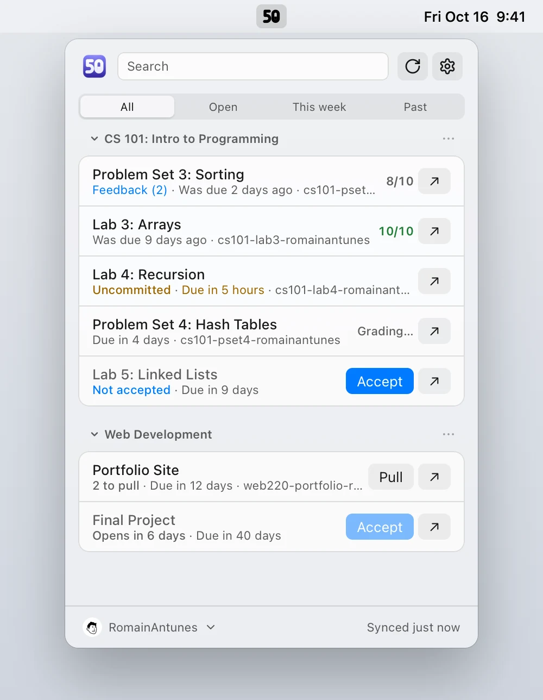
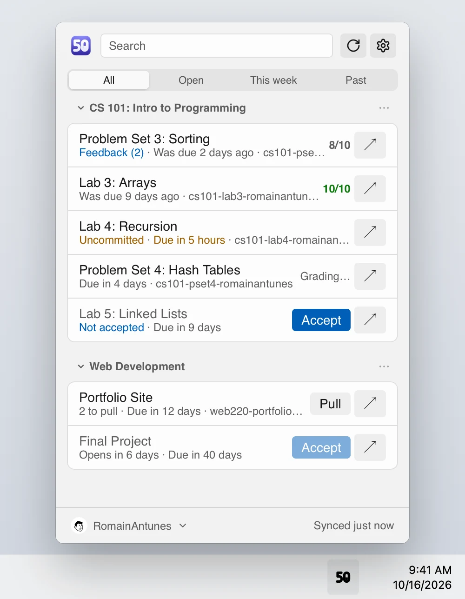
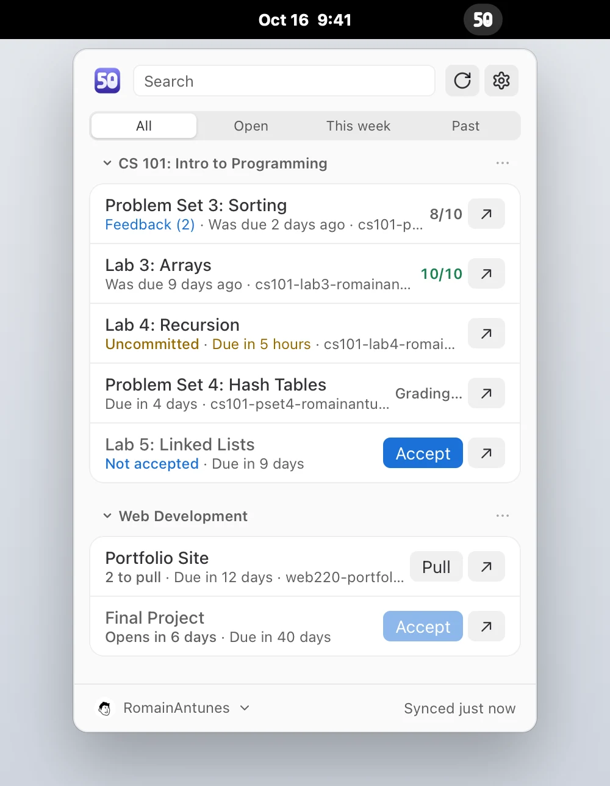

Your Classroom 50 assignments, one click away.
Due dates, grades and the tests that failed, in your menu bar or notification area. Accept, clone, commit and submit with a button instead of a command.
Other platforms


See why a test failed
Every graded submission shows its score, which tests passed, and the autograder's output for the ones that didn't. Your earlier grades and your teacher's feedback are one click further.
The list also says what's waiting: work not committed, commits not pushed, a teammate's new commits, and the autograder still running.

Commit and push from the list
The app names the files it's about to commit and leaves out
.DS_Store, .idea, .vscode and other editor
files. Write a message, and your work is on GitHub.
Off until you turn it on in Settings, for classes that teach git in the terminal.
Accepting, cloning, pulling and submitting work the same way: one click, and the app
runs gh student or git for you.

Ready in a minute
The first launch installs git, the GitHub CLI and the
gh student extension through Homebrew, winget or your Linux package
manager, then signs you in with GitHub in your browser.
It finds the projects you already cloned in the folders your editor opened recently: VS Code, Cursor, JetBrains IDEs, Zed, Sublime Text and more.
At home on every system
Each system's own materials, fonts and controls, in light and dark.



Also in the box
- Notifications
- Before a deadline, when a grade or feedback arrives, when a new assignment is published and when a teammate pushes.
- Groups
- Who's in your group on team assignments, and adding a classmate to it.
- Calendar
-
Your due dates in the Calendar app, GNOME Calendar, KOrganizer or any app that opens
.icsfiles. - 15 languages
- English, French, Spanish, German, Italian, Portuguese, Chinese, Japanese and more.
- Keyboard and screen readers
- Every action works without a mouse, and every row reads out what it shows.
- Private
-
Talks to GitHub only, with the sign-in
ghalready has. Nothing goes anywhere else.
First launch
The app isn't code-signed yet, so your system asks you to confirm it once. After that it updates itself.
- macOS
- Open the app, then go to System Settings › Privacy & Security and click Open Anyway.
- Windows
- When SmartScreen says "Windows protected your PC", click More info › Run anyway.
- Linux
- On GNOME, tray icons need the AppIndicator extension (Ubuntu ships it).
Free and open source
The toolbox is GPL-3.0, like Classroom 50, and built by a student in their spare time. Signing it, so the step above goes away, costs 99 USD a year, and sponsoring it on GitHub pays for that. Starring the repository and telling your class about it helps too.